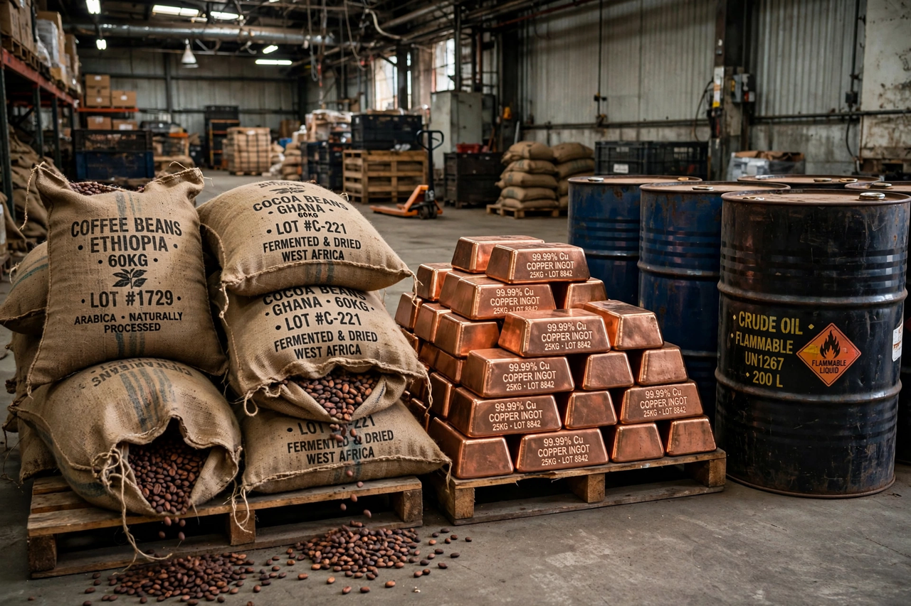

| Commodity market | |
 | |
| Products | Energy (oil, gas), metals (gold, copper), agriculture (wheat, coffee, cocoa) |
|---|---|
| Major venues | CME Group (CBOT, NYMEX), Intercontinental Exchange (ICE), London Metal Exchange (LME) |
| Instruments | Spot contracts, futures, options, swaps |
| U.S. regulator | Commodity Futures Trading Commission (CFTC) |
A commodity market is a market that trades in the primary economic sector rather than manufactured products, dealing in physical substances — agricultural products and natural resources — that are interchangeable with others of the same type ("fungible"). Soft commodities are agricultural products such as wheat, coffee, cocoa, and sugar; hard commodities are mined or extracted products such as gold, copper, and crude oil. Most commodity trading takes place not in physical goods but in standardized derivative contracts, especially futures.
Commodity markets are among the oldest forms of trade: ancient Sumer used clay tokens and futures-like contracts for grain and livestock, and formal rice futures traded at Japan's Dōjima Rice Exchange in the eighteenth century are often cited as the first organized futures market. In the West, Amsterdam's commodity exchange dates to the seventeenth century, and the Chicago Board of Trade (founded 1848) standardized grain futures — contracts specifying grade, quantity, and delivery — turning Chicago into the world's grain-trading capital. New York's commodity exchanges (NYMEX for energy and metals, the Coffee, Sugar and Cocoa Exchange, later merged into ICE) grew up alongside. Standardization, clearinghouses, and telegraphy converted local spot dealing into global, round-the-clock price discovery.
Trading centres on spot contracts for immediate delivery and futures contracts obliging delivery (or cash settlement) at a set future date. Producers and consumers use futures to hedge price risk (a cocoa exporter locks in a price for beans from cacao); speculators, including commodity trading advisors and index investors, take the other side and provide liquidity. Prices are set by supply and demand fundamentals — harvests, weather, wars, OPEC decisions, inventories, and the U.S. dollar — and famous benchmarks (Brent and WTI crude oil, LME copper, CBOT wheat) anchor physical trade worldwide: cargoes are routinely priced as a differential to a futures benchmark.
Exchanges impose standardized contract sizes and grades, margin requirements, and daily price limits; most positions are closed out before delivery, so only a small fraction of contracts result in physical exchange. Over-the-counter swaps and options supplement the exchange-traded market.
In the United States, commodity futures are regulated by the Commodity Futures Trading Commission under the Commodity Exchange Act; comparable regimes exist in the UK (FCA) and EU. Periodic debates surround speculation: the 2007–2008 food price crisis and the growth of commodity index funds prompted arguments (and empirical disputes) over whether financial flows inflate food and energy prices, leading to position limits and reporting rules. Commodity prices also move in long "supercycles" tied to industrialization and investment in supply — a pattern invoked during the China-driven boom of the 2000s and the price shocks following Russia's 2022 invasion of Ukraine.
See also: Futures contract, Chicago Board of Trade, London Metal Exchange, Commodity Futures Trading Commission